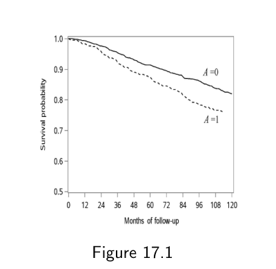
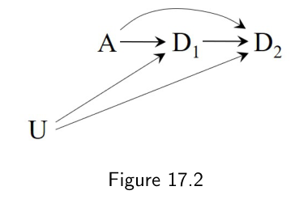
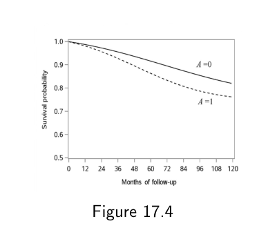
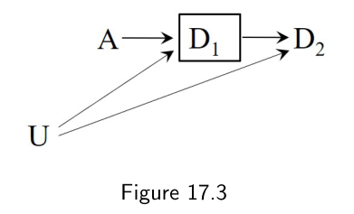
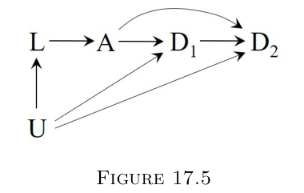
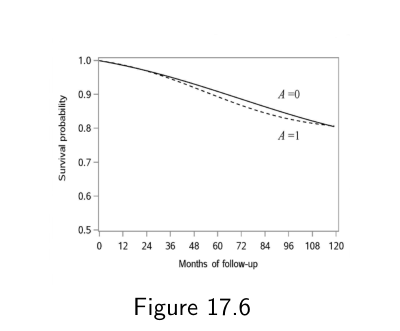
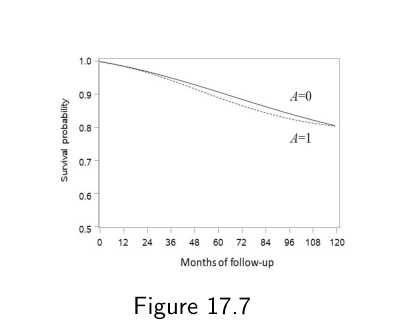
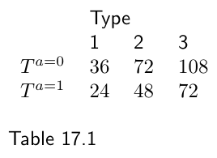

第二部分 · 基于模型的因果推断 · Part II — Causal inference with models
第 17 章 · 因果生存分析
Hernán MA, Robins JM（2020）. Causal Inference: What If. Chapter 17. 本页为中文全文翻译，附译注。
前面各章关心的因果问题，都围绕处理对某个时点上结局的影响：比如我们估计过戒烟对 1982 年体重增加的影响。但很多因果问题问的是另一回事——处理对"某件事发生所需时间"的影响。比如，我们可能想估计戒烟对死亡时间的影响，无论死亡何时发生。这就是一项生存分析。"生存"这个词并不意味着感兴趣的事件一定是死亡。"生存分析"或等价的"失效时间分析"适用于任何关于"到事件发生的时间"的分析，事件可以是死亡、结婚、入狱、患癌、流感感染，等等。生存分析需要一些专门的考量与技术，因为很多个体的失效时间发生在研究结束之后，因而是未知的。本章在处理为时不变的简化设定下，勾勒出生存分析的基本技术。
17.1 风险与发生率
假设我们要估计戒烟 A（1：是，0：否）对死亡时间 T 的平均因果效应，时间从随访起点算起。这就是一项生存分析：结局是到某个感兴趣事件的时间，而该事件可能在随访开始后的任意时刻发生。在大多数随访研究中，感兴趣的事件并不会在研究的所有人身上被观察到，甚至不会在研究的大多数人身上被观察到。原因是这样的：大多数随访研究都有一个日期，过了这个日期，关于任何个体都不再有信息，也就是随访的行政结束（administrative end of follow-up）。行政结束之后，没有更多数据可用。凡是在行政结束之前没有发生感兴趣事件的人，其生存时间被行政删失（administratively censored）：我们知道他在行政结束之后还活着，但不知道还能活多久。举例来说，假设我们在 NHEFS 中 1629 名基线年龄在 25 至 74 岁、并且活到 1982 年的香烟吸烟者中做上述生存分析。对所有人来说，随访起点是 1983 年 1 月 1 日，随访的行政结束是 1992 年 12 月 31 日。我们把行政删失时间定义为行政结束日期与随访开始日期之差。在我们的例子里，这个时间对所有人都是同一个值——120 个月——因为随访起点和行政结束对每个人都一样。在 1629 人中，只有 318 人在 1992 年结束前死亡，因此其余 1311 人的生存时间被行政删失了。
边注 在有错位入组（staggered entry，即随访起始日期各不相同）的研究里，即使行政结束日期对所有人相同，不同个体的行政删失时间也会不同。
行政删失是生存分析内在的问题——一项关于戒烟与死亡的研究几乎不可能、也几乎从不把一群人一直随访到全部死绝。但行政删失并不是生存分析中可能出现的唯一一种删失。和任何其他因果分析一样，生存分析还必须处理非行政类型的删失，比如失访（例如退出研究）与竞争事件（见精细辨析 17.1）。在前面几章里，我们讨论过如何用标准化或 IP 加权来调整非行政删失引入的选择偏倚。同样的一套办法也能用进生存分析。因此本章把注意力放在行政删失上。对非行政删失更详细的讨论我们推迟到第三部分，因为非行政删失一般是一个时变过程，而行政删失的时间在基线就固定了。
边注 为简化起见，我们假定任何没有确认死亡的人都在随访期内存活了下来。现实中有些人可能已经死亡，但取得确认（例如通过死亡证明或向家属询问）并不可行。同样出于简化目的，我们在此忽略精细辨析 12.1 描述的那个问题。
在我们的例子里，死亡发生的月份 T 可以取 1（1983 年 1 月）到 120（1992 年 12 月）之间的值。对随访期间死亡的 102 名已处理者（A = 1）和 216 名未处理者（A = 0），T 是已知的；对其余 1311 人，T 被行政删失（也就是说，我们只知道它大于 120 个月）。因此我们没法像前面几章处理感兴趣结局那样，去计算平均生存时间 E[T]。在生存分析中，我们需要用另外一些能够容纳行政删失的度量。下面定义这些量，它们都是生存时间 T 的函数。
生存概率 Pr[T > k]，也就是第 k 个月的生存率，是指存活过了时间 k 的个体所占的比例。如果我们逐月计算生存率直到随访的行政结束 kend = 120，并把它沿一条水平时间轴画出来，就得到了生存曲线。生存曲线从 k = 0 处的 Pr[T > 0] = 1 出发，随后随着 k 取 1、2、…、kend 而单调下降——也就是说，它不会上升。另一种办法是把时点 k 处的风险（risk，也叫累积发病率，cumulative incidence）定义为 1 减去生存率，即 1 − Pr[T > k] = Pr[T ≤ k]。累积发病率曲线从 Pr[T ≤ 0] = 0 出发，在随访期间单调上升。
边注 还能从生存曲线导出其他效应度量，例如损失生命年（years of life lost）与限制平均生存时间（restricted mean survival time）。
在生存分析中，量化处理效应的一个自然做法，是在某个或所有时点 k 上比较各个处理水平下的生存率或风险。当然，在我们的戒烟例子里，这些曲线的对比未必有因果解释，因为已处理者与未处理者很可能不可交换。不过我们先姑且假定（实际上这个假定一直撑到 17.4 节）戒烟者（A = 1）与未戒烟者（A = 0）是边际可交换的。这样我们就可以构造出图 17.1 中的生存曲线，并在所有时点 k 上比较 Pr[T > k|A = 1] 与 Pr[T > k|A = 0]。举例来说，戒烟者在 120 个月时的生存率为 76.2%，未戒烟者为 82.0%。我们也可以对比风险而不是生存率：戒烟者在 120 个月时的风险为 23.8%，未戒烟者为 18.0%。

A = 1，虚线）与未戒烟者（A = 0，实线）的生存曲线，纵轴为生存概率、横轴为随访月数，曲线由 Kaplan-Meier 估计量构造。120 个月处两条曲线分别为 76.2% 与 82.0%。两条曲线全程不交叉，但这一差异尚不能作因果解读。边注 代码：Program 17.1。一项比较生存曲线的常规统计检验（log-rank 检验）给出的 P 值 = 0.005。
在任意时点 k 上，我们还可以计算：在那些此前尚未发生该事件的人当中，在区间 k 内发生该事件的比例。这就是风率（hazard）Pr[T = k|T > k − 1]。严格地说，这是离散时间风率，即在时间以离散区间（而非连续方式）计量的研究中的风率。由于现实世界的研究中，时间确实是按离散区间（年、月、周、天……）而非真正连续的方式计量的，本书就把离散时间风率简称为风率。
风险与风率是两个不同的度量。风险的分母——基线时的个体数——在各个时点 k 上保持不变，而它的分子——基线到 k 之间的全部事件——是累积的。也就是说，风险会随 k 增大而保持不变或上升。另一方面，风率的分母——时点 k 时仍存活的个体数——随时间变化，而它的分子只包含近期的事件，也就是区间 k 内发生的事件。也就是说，风率可能随时间上升或下降。在我们的例子里，戒烟者在 120 个月处的风率为 0%（因为这一组最后一次死亡发生在第 113 个月），未戒烟者为 1/986 = 0.10%；而 0 到 120 个月之间的风率曲线大致呈字母 M 的形状。
生存分析中量化处理效应的一个常用做法，是估计已处理者与未处理者的风率之比，即所谓的风率比（hazard ratio）。然而，出于精细辨析 17.2 所述的理由，风率比是有问题的。因此，本书的生存分析更看重生存率与风险，而不是风率。但这并不意味着我们应当完全无视风率：估计风率常常是估计生存率与风险的一个有用的中间步骤。
17.2 从发生率到风险
在生存分析中，整理分析数据集主要有两种办法。第一种安排下，数据库的每一行对应一个人。当存在时变处理与时变混杂因素时，这种数据格式常被称为"宽"（wide）格式，这也是本书到目前为止一直使用的格式。在上一小节的分析中，数据集有 1629 行，每人一行。
第二种安排下，数据库的每一行对应一个"人-时"。也就是说，第一行是 1 号在 k = 0 时的信息，第二行是 1 号在 k = 1 时的信息，第三行是 1 号在 k = 2 时的信息，如此下去直到 1 号的随访结束；下一行则是 2 号在 k = 0 时的信息，以此类推。这种人-时（person-time，也叫"长"long）数据格式，是本章大多数生存分析以及第三部分所有时变处理分析将要使用的格式。在我们的戒烟例子里，人-时数据集有 176764 行，每行一个人-月。
为了在人-时数据格式中编码到 k 为止的生存信息，定义一个时变的事件指示变量 Dk 会很方便。对每个人、在每个月 k 上，指示变量 Dk 在 T ≤ k 时取 1，在 T > k 时取 0。图 17.2 的因果图画出了处理 A 与时点 1、2 的事件指示变量 D1 与 D2。变量 U 表示那些（一般未测量的）提高对感兴趣事件易感的因素。注意这些易感因素有时也是时变的；那时它们可以在因果图中画成 U0、U1 等等。第三部分讨论处理本身为时变的情形。

A 指向事件指示变量 D1 与 D2；未测的易感因素 U 同时指向 A、D1 与 D2。易感因素 U 一般不可测量，这是本章必须借助模型的原因之一。在人-时数据格式中，某个个体在时点 k 的那一行包含指示变量 Dk+1。在我们的例子里，人-时数据集的第一行（1 号在 k = 0）包含指示变量 D1，它在 1 号死于第 1 个月时为 1，否则为 0；第二行（1 号在 k = 1）包含 D2，在 1 号死于第 2 个月时为 1，否则为 0；如此类推。数据集中每个个体的最后一行，要么是她第一个满足 Dk+1 = 1 的行，要么是对应第 119 个月的那一行。
边注 按定义，每个人都必须活过第 0 个月才可能被纳入数据集，即对所有人都有 D0 = 0。
借助时变结局变量 Dk，我们可以把 k 处的生存率定义为 Pr[Dk = 0]，它等于 Pr[T > k]；把 k 处的风险定义为 Pr[Dk = 1]，它等于 Pr[T ≤ k]。k 处的风率定义为 Pr[Dk = 1|Dk−1 = 0]。对 k = 1，风率等于风险，因为按定义所有人在 k = 0 时都还活着。
k 处的生存概率，等于从 0 到 k 之间每一个区间的条件生存概率之积。举例来说，k = 2 处的生存率 Pr[D2 = 0]，等于 k = 1 处的生存率 Pr[D1 = 0] 乘以"在 k = 1 处已存活的条件下 k = 2 处的生存率" Pr[D2 = 0|D1 = 0]。更一般地，k 处的生存率是
Pr[Dk = 0] = ∏m=1k Pr[Dm = 0|Dm−1 = 0]也就是说，k 处的生存率等于此前所有时点上"1 减去风率"之积。如果我们知道了到 k 为止的风率，就能轻松算出 k 处的生存率（或者风险，它只是 1 减去生存率）。
k 处的风率 Pr[Dk = 1|Dk−1 = 0]，可以用区间 k 内发生的病例数除以区间 k − 1 结束时仍存活的个体数，非参数地估计出来。把这个估计代进上面的公式，得到的 k 处生存率 Pr[Dk = 0] 的非参数估计，就称为 Kaplan-Meier 估计量，也叫乘积极限（product-limit）估计量。
边注 在人-时数据结构中，虽然每个人在数据里占据多行，但只要风率模型设定正确，常规模性回归程序输出的参数估计的标准误就是正确的。
图 17.1 就是用 Kaplan-Meier 估计量构造的。只要整个随访期内的失效总数足够大，它是生存曲线的一个很好的估计量。通常每个区间内的病例数很少（甚至为零），因此 k 处风率 Pr[Dk = 1|Dk−1 = 0] 的非参数估计会非常不稳定。如果我们感兴趣的是某个特定 k 处的风率估计，就需要借助参数模型做平滑（见第 11 章与精细辨析 17.3）。
参数化估计风率的一个简单办法，是为 Pr[Dk+1 = 1|Dk = 0] 拟合一个 logistic 回归模型，该模型在每个 k 上只限于存活过 k 的个体。使用人-时数据格式时，这个模型的拟合很直接。在我们的例子里，我们可以为 Pr[Dk+1 = 1|Dk = 0, A] 拟合如下 logistic 模型来估计已处理与未处理者的风率：
logit Pr[Dk+1 = 1|Dk = 0, A] = θ0,k + θ1A + θ2A × k + θ3A × k2其中 θ0,k 是一个时变截距，可以用时间的某个灵活函数估计，比如 θ0,k = θ0 + θ4k + θ5k2。这个灵活的时变截距允许风率随时间变化，而处理 A 与时间的乘积项（θ2A × k + θ3A × k2）则允许风率比随时间变化。至于 logistic 模型如何逼近风率模型，技术要点 17.1 有细节说明。除了 logit 之外的其他函数（比如 probit）同样可以用来建模二值结局，从而估计风率。
接下来，我们把"1 减去 Pr[Dk+1 = 1|Dk = 0, A = a] 的估计值"逐期相乘，分别对已处理者与未处理者求出生存 Pr[Dk+1 = 0|A = a] 的估计值。
边注 代码：Program 17.2。
图 17.4 展示的就是参数化估计风率之后得到的生存曲线。这些曲线是图 17.1 中那些曲线的一个平滑版本。

A = 1，虚线）与未戒烟者（A = 0，实线）。与图 17.1 相比，两条曲线都更平滑，并且在随访的多数时段里差距更大。这套程序的有效性要求风率模型没有错设。在我们的例子里，这个假定似乎站得住，因为用完全非参数的方式估计生存率时，我们得到的估计值与这里基本相同。生存估计的 95% 置信区间可以通过对人群中的个体做自助抽样（bootstrapping）轻松构造出来。

D1 被画成方框，表示它是分析中被条件化的碰撞因子。条件于 D1 打开了路径 A → D1 ← U → D2，这正是风率比无法直接作因果解释的根源。17.3 为什么删失很重要
在我们的研究中，删失的唯一来源是一个对所有人相同的共同行政删失时点 kend = 120。在这个简单设定下，上一节那套估计生存率的程序是杀鸡用牛刀了。人们只要用"接受了处理 a 且活过 k + 1 的个体所占比例"就能估计生存概率 Pr[Dk+1 = 0|A = a]，或者对 k = 0, 1, …, kend 分别拟合 Pr[Dk+1 = 0|A] 的 logistic 模型。
现在假设个体在不同的日期开始随访——也就是错位入组——但行政结束日期对所有人仍然相同。由于行政删失时间是行政结束日期减去随访开始时间，不同个体的行政删失时间就会不同。在这种设定下，定义一个"截至时点 k 是否已被删失"的时变指示变量 Ck 会很方便。对每个人、在每个月 k 上，Ck 在行政结束晚于 k 时取 0，否则取 1。在人-时数据格式中，某个个体在时点 k 的那一行包含指示变量 Ck+1。我们没有把这个变量放进数据集，因为在 120 个月之前的所有时点 k 上，对所有个体都有 Ck+1 = 0。在更一般的、随机的（即个体特异的）行政删失情形下，Ck+1 会在不同的时点 k 上、对不同的人从 0 变成 1。
我们的目标是估计这样一条生存曲线：如果没有人在 kend（研究中的最大行政删失时点）之前被删失，本来会观察到的生存曲线。也就是说，我们要估计的生存率 Pr[Dk = 0|A = a]，是"假如时变指示变量 Dk 在删失之后也是已知的"情况下本来会观察到的那个值。技术上的说法是 Prc=0[Dk = 0|A = a]，其中 c 是由各个时点的删失指示变量组成的向量 c = (c1, c2, …)，其最后一个分量对应最大行政删失时点 kend。如第 12 章所述，加上上标 c = 0 是为了把我们心里想的那个量明确写出来。在不会引起混淆的情况下，我们有时会省略上标 c = 0。为简化起见，假设随访的开始时间就好像是随机分配给每个个体的——如果任何变量都没有随日历时间变化的长期趋势，这一点就会成立。这样，行政删失时间、因而指示变量 C，就同时独立于处理与死亡时间。
我们无法通过简单地计算"接受了处理水平 a、存活且未被删失直到 k 的个体比例"，来有效地估计时点 k 的生存率 Pr[Dk = 0|A = a]。这个比例是联合概率 Pr[Ck+1 = 0, Dk+1 = 0|A = a] 的有效估计量，而那不是我们想要的东西。为看清这一点，考虑一个 kend = 2 的研究，其中发生如下情形：
Pr[C1 = 0]= 1，即到k = 1时没有一个人被删失；Pr[D1 = 0|C0 = 0]= 0.9，即 90% 的个体存活过k = 1；Pr[C2 = 0|D1 = 0, C1 = 0]= 0.5，即存活者中随机的一半在k = 2前被删失；Pr[D2 = 0|C2 = 0, D1 = 0, C1 = 0]= 0.9，即剩余个体中 90% 存活过k = 2。
在 k = 2 处，未被删失的存活者所占比例为 1 × 0.9 × 0.5 × 0.9 = 0.405。然而，假如没有人被删失，即 Pr[C2 = 0|D1 = 0, C1 = 0] = 1，生存率本应是 1 × 0.9 × 1 × 0.9 = 0.81。这个例子说明，要正确估计生存率 Pr[Dk = 0|A = a]，就必须使用上一节描述的那套程序。具体来说，在（仿佛）删失随机分配的假定下，时点 k 处的生存率 Pr[Dk = 0|A = a] 是
Pr[Dk = 0|A = a] = ∏m=1k Pr[Dm = 0|Dm−1 = 0, Cm = 0, A = a]，其中 k < kend估计程序与前面描述的相同，区别只在于我们要么使用原因别风率（cause-specific hazard）Pr[Dk+1 = 1|Dk = 0, Ck+1 = 0, A = a] 的非参数估计，要么为它拟合一个 logistic 模型。
我们往往并不愿意假定删失是仿佛随机分配的。当存在错位入组时，个体的行政删失时间取决于入组时的日历时间（越晚入组，kend 的取值越短），而日历时间本身又可能与结局有关。因此上面的程序需要针对基线日历时间作调整。此外，还可能存在其他基线预后因素在已处理者（A = 1）与未处理者（A = 0）之间分布不均，这也需要调整。接下来两节会用 g 方法把上述程序扩展为能够纳入对基线混杂因素的调整。在第三部分，我们会把程序扩展到处理与混杂因素都是时变的情形。
17.4 边际结构模型的 IP 加权
当已处理者与未处理者不可交换时，直接对比他们的生存曲线不能被赋予因果解释。在我们的戒烟例子里，我们估计出 120 个月的生存率在戒烟者中低于未戒烟者（76.2% 对 82.0%），但这并不必然意味着戒烟提高了死亡率。年长的人更可能戒烟，也更可能死亡。这种由年龄造成的混杂让戒烟显得糟糕，因为戒烟者中年长者的比例高于未戒烟者。
我们把 Dka,c=0 定义为"在处理水平 a 且无删失的条件下，时点 k 死亡的时变反事实指示变量"。为了记号简便，只要像本章这样清楚目标是估计"无删失情形下的生存率"，我们就写作 Dka。为了进一步简化，本章余下部分我们在时点 k 的风率 Pr[Dk+1 = 0|Dk = 0, L = l, A] 的条件事件中一律略去 Ck = 0。也就是说，我们把一切都写成仿佛所有个体有一个共同的行政删失时点，就像我们的戒烟例子里那样。
假设我们想比较反事实生存率 Pr[Dk+1a=1 = 0] 与 Pr[Dk+1a=0 = 0]——它们分别是在所有人都接受处理（a = 1）和所有人都不接受处理（a = 0）的情形下本来会观察到的生存率。也就是说，我们关心的因果对比是
Pr[Dk+1a=1 = 0] vs. Pr[Dk+1a=0 = 0]，其中 k = 0, 2, …, kend − 1由于存在混杂，这个对比可能无法用我们在前面几节描述的 Pr[Dk+1 = 0|A = 1] 与 Pr[Dk+1 = 0|A = 0] 之差来有效估计。相反，对 a = 1 和 a = 0 的量 Pr[Dk+1a = 0] 的有效估计，通常都需要对混杂因素作调整，而调整可以通过若干方法实现。本节聚焦于 IP 加权。我们假定已处理者（A = 1）与未处理者（A = 0）在 L 变量的各层内可交换，如图 17.5 的因果图所表示的。与第 12 至 15 章一样，L 包含性别、年龄、种族、教育程度、吸烟强度与吸烟时长、日常生活中的体力活动、休闲运动以及体重这些变量。我们还假定可阳性性与一致性。IP 加权生存曲线的估计分两步。

L 与未测因素 U：L 指向处理 A，也同时指向 D1 与 D2，其中 L 表示第 12 章列出的 9 个已测基线协变量向量。本章 17.4 至 17.5 节所依赖的可交换性假定，就是 L 层的条件可交换性。边注 代码：Program 17.3。
第一步，我们为研究人群中的每个个体估计稳定化 IP 权重 SWA。程序与第 12 章描述的完全一样。我们为给定 L 中各变量时接受处理（即戒烟）的条件概率 Pr[A = 1|L] 拟合一个 logistic 模型。估计权重 SWA 的分母，对已处理个体是 Prc[A = 1|L]，对未处理个体是 1 − Prc[A = 1|L]，其中 Prc[A = 1|L] 是 logistic 模型的预测值。估计权重 SWA 的分子，对已处理者是 Prc[A = 1]，对未处理者是 1 − Prc[A = 1]；Prc[A = 1] 可以非参数地估计，也可以作为"处理边际概率 Pr[A = 1] 的 logistic 模型"的预测值。关于预测值的细节见第 11 章。
把估计出的权重 SWA 施加上去，会造出一个伪人群，其中 L 中的变量与处理 A 独立，从而消除了这些变量造成的混杂。在我们的例子里，权重均值为 1（正如预期），取值范围从 0.33 到 4.21。
第二步，使用人-时数据格式，我们拟合一个如前所述的风率模型，只不过个体按其估计的 SWA 加权。技术上说，这个 IP 加权的 logistic 模型估计的是下面这个边际结构 logistic 模型的参数：
logit Pr[Dk+1a = 0|Dka = 0] = β0,k + β1a + β2a × k + β3a × k2边注 原书此处公式左端印作 Dk+1a = 0，但正文明确称之为"时变风率"模型，故左端应为 Dk+1a = 1|Dka = 0；这是一个排印错误，读者按风率的定义理解即可。
也就是说，IP 加权模型估计的是这样一组时变风率：如果研究人群中的所有人都接受处理（a = 1）本来会观察到的风率，以及如果他们都不接受处理（a = 0）本来会观察到的时变风率。于是，IP 加权风率模型给出的 Pr[Dk+1a = 0|Dka = 0] 的估计值可以逐期相乘（见上一节），得到在处理 a = 1 与无处理 a = 0 下本来会观察到的生存率 Pr[Dk+1a = 0] 的估计值。所得曲线见图 17.6。
在我们的例子里，120 个月的生存率估计在戒烟下为 80.7%，在不戒烟下为 80.5%；差值 0.2%（基于 500 次自助抽样的 95% 置信区间为 −4.1% 到 3.7%）。虽然在整个随访的大部分时间里处理下的生存曲线低于无处理下的曲线，但两者的最大差异从未超过 −1.4%（95% 置信区间 −3.4% 到 0.7%）。也就是说，在用 IP 加权对协变量 L 作调整之后，我们几乎没有发现戒烟在随访期内任何时点对死亡率有影响的证据。这套程序的有效性要求处理模型与边际风率模型都没有错设。

A = 1，虚线）与不戒烟（A = 0，实线）。与图 17.1、17.4 中的曲线相比，两条曲线几乎完全重合，120 个月处分别为 80.7% 与 80.5%，全程最大差异不超过 −1.4%。17.5 参数化 g 公式
上一节我们用 IP 加权估计了整个人群中处理下与无处理下的生存曲线。为此我们调整了 L，并假定了可交换性、可阳性性与一致性。在同样的假定下，估计边际生存曲线的另一种方法，是基于参数模型的标准化，也就是参数化 g 算法（parametric g-formula）。
处理水平 a 下、k + 1 处的生存率 Pr[Dk+1a = 0]，是"在协变量 L 的各层内、处理水平 A = a 条件下，k + 1 处条件生存概率"的加权平均，各层的权重是 L 每个取值 l 上个体所占的比例。也就是说，在可交换性、可阳性性与一致性之下，Pr[Dk+1a = 0] 等于标准化生存率
Pr[Dk+1a = 0] = ∑l Pr[Dk+1 = 0|L = l, A = a] Pr[L = l]形式化的证明见 2.3 节。
因此，参数化 g 算法的估计分两步。第一，我们需要用行政删失的数据估计条件生存率 Pr[Dk+1 = 0|L = l, A = a]。第二，我们需要计算它们在协变量 L 所有取值 l 上的加权平均。下面就在我们的戒烟例子里分别说明这两步。
第一步，我们拟合一个如 17.2 节所述的参数风率模型，只不过把 L 中的变量作为协变量放进去。如果模型设定正确，它就能有效地估计 A 与 L 各层内的时变风率 Pr[Dk+1 = 1|Dk = 0, L, A]。各条件风率"1 减去"之积
∏m=0k Pr[Dm+1 = 0|Dm = 0, L = l, A = a]等于条件生存率 Pr[Dk+1 = 0|L = l, A = a]。由于给定 L 的条件可交换性，对于某一组特定的协变量取值 L = l 与 A = a，条件生存率可以作因果解释，含义是"如果具有这组协变量取值的每个人都接受处理值 a，本来会观察到的生存率"。也就是说，
Pr[Dk+1 = 0|L = l, A = a] = Pr[Dk+1a = 0|L = l]因此，条件风率可以用来估计 L 的每一种取值组合 l 下、处理（a = 1）与无处理（a = 0）的生存曲线。举例来说，我们可以用这个模型估计一位 61 岁、大学学历、运动量很低的男性白人在处理与无处理下的生存曲线。然而，我们的目标是估计处理与无处理下的边际生存曲线，而不是条件生存曲线。
边注 在第 12 章里，我们把条件于所有协变量 L 的模型称作"伪边际结构模型"（faux marginal structural models）。
第二步，我们计算条件生存率在协变量 L 所有取值 l 上的加权平均，也就是把生存率标准化到混杂因素的分布上。为此我们采用 13.3 节所描述的标准化均值的做法：展开数据集、结局建模、预测，再做平均。这个方法即使在 L 中某些变量是连续变量、使得对取值 l 的求和形式上是一个积分时，也能使用。所得曲线见图 17.7。
边注 代码：Program 17.4。这个程序与第 13 章描述的做法类似。

A = 1，虚线）与不戒烟（A = 0，实线）。两条曲线在整个随访期内几乎完全重合，120 个月处分别为 80.4% 与 80.6%。与图 17.6 的 IP 加权结果相比，形状略有差异，但结论一致。在我们的例子里，整个随访期内处理下的生存曲线都低于无处理下的曲线，但最大差异从未超过 −2.0%（95% 置信区间 −5.6% 到 1.8%）。120 个月的生存率估计在戒烟下为 80.4%，在不戒烟下为 80.6%；差值 0.2%（95% 置信区间 −4.6% 到 4.1%）。也就是说，在用标准化对协变量 L 作调整之后，我们几乎没有发现戒烟在随访期内任何时点对死亡率有影响的证据。请注意，用 IP 加权（上一节）与用参数化 g 算法（本节）估计出的生存曲线相似但并不相同，因为它们依赖的参数化假定不同：IP 加权估计要求处理模型与无条件风率模型都不错设，而参数化 g 算法估计只要求条件风率模型不错设。
17.6 结构嵌套模型的 G-estimation
前面几节描述的因果对比，都是比较不同处理水平 A 下的生存率或风险。生存率由 logistic 回归模型估计的风率算得。当分析方法是边际结构模型的 IP 加权或参数化 g 算法时，这条路走得通；但当方法是结构嵌套模型的 g 估计时，它就走不通了。如第 14 章所解释的，结构嵌套模型建模的是条件因果对比（例如不同处理水平下协变量特异均值之差或之比），而不是这些对比的组成部分（例如各个处理水平下的均值本身）。因此我们不能用结构嵌套模型来估计生存率或风率。
边注 事实上，我们甚至可能连风率比都无法近似，因为结构嵌套 logistic 模型不容易推广到时变处理（技术要点 14.1）。
边注 Tchetgen Tchetgen 等（2015）与 Robins（1997b）描述了带工具变量的生存分析，其中存在与这里为结构嵌套模型所描述的类似问题。
不过，我们可以考虑用一个结构嵌套对数线性模型，来建模不同处理水平下累积发病率（即风险）之比。结构嵌套累积失效时间模型正是这么做的（见技术要点 17.2），但它们最好用在失效为罕见事件的情形，因为对数线性模型并不会天然地给风险加上 1 这个上限。对于非罕见失效，我们可以改为考虑用结构嵌套对数线性模型建模不同处理水平下累积生存概率（即 1 − 风险）之比。结构嵌套累积生存时间模型正是这么做的（见技术要点 17.2），但它们最好用在生存为罕见的情形，因为对数线性模型并不会天然地给生存率加上 1 这个上限。一个更一般的选择，是用一个结构嵌套模型来建模不同处理选项下生存时间之比，也就是加速失效时间（AFT）模型。
边注 "嵌套"这一部分只有在处理是时变的时候才看得出来。见第 21 章。
令 Tia 为个体 i 在处理水平 a 下的反事实生存时间。处理 A 对个体 i 生存时间的效应，可以用她的"处理下与无处理下的反事实生存时间之比" Tia=1/Tia=0 来度量。如果生存时间比大于 1，那么处理是有益的，因为它延长了生存时间；如果比值小于 1，处理是有害的；如果比值等于 1，处理没有效应。先暂时假设处理效应对人群中每个个体都相同。
那么我们可以考虑结构嵌套加速失效时间（AFT）模型 Tia/Tia=0 = exp(−ψ1a)，其中 ψ1 度量由处理带来的每个个体生存时间的扩张（或收缩）。若 ψ1 < 0，处理延长生存时间；若 ψ1 > 0，处理缩短生存时间；若 ψ1 = 0，处理不影响生存时间。
边注 ψ 前面的负号，是为了保留通常的解释约定：参数为正表示有害，为负表示有益。
更一般地，处理效应可以依赖于协变量 L，于是一个更一般的结构 AFT 模型是 Tia/Tia=0 = exp(−ψ1a − ψ2aLi)，其中 ψ1 与 ψ2（一个向量）在个体间恒定。把各项重新排列，模型可以写成
Tia=0 = Tia exp(ψ1a + ψ2aLi)，对所有个体 i按照第 14 章同样的推理，反事实的一致性意味着模型 Tia=0 = Ti exp(ψ1Ai + ψ2AiLi)，其中反事实时间 Tia 被实际生存时间 TiA = Ti 取代。参数 ψ1 与 ψ2 可以用一套修正过的 g 估计程序来估计（用以处理行政删失），我们在本节后面会讲。
上面的结构 AFT 是不现实的，因为它既是确定性的，又是秩保持的。它是确定性的，因为它假定对每个个体，无处理下的反事实生存时间 Ta=0 可以由观测到的生存时间 T、处理 A 与协变量 L 无误差地算出。它是秩保持的，因为在这个模型下，如果个体 i 与 j 都未接受处理时 i 会先于 j 死亡，即 Tia=0 < Tja=0，那么当两人都接受处理时，个体 i 也会先于 j 死亡，即 Tia=1 < Tja=1。
边注 Robins（1997b）描述了非确定性的、非秩保持的结构嵌套 AFT 模型。
由于秩保持这一假定不太可信，一般而言不该使用依赖它的因果推断方法，正如我们在第 14 章讨论过的那样。然而这里我们仍然用一个秩保持模型来描述结构 AFT 模型的 g 估计，一是因为对秩保持模型来说 g 估计更容易理解，二是因为对秩保持模型与对非秩保持模型而言，g 估计程序实际上是同一个。
考虑较简单的秩保持模型 Tia=0 = Ti exp(ψAi)，其中不含处理与协变量之间的乘积项。如果不存在行政删失——也就是如果我们能观测到所有人的死亡时间 T——那么对这个结构 AFT 模型的参数 ψ 做 g 估计会很直接。事实上，在那种情形下，g 估计程序与我们在 14.5 节描述的完全相同。第一步是在因果参数 ψ 的许多可能取值 ψ† 下，计算候选反事实 Hi(ψ†) = Ti exp(ψ†Ai)。第二步是找出那个使 Hi(ψ†) 在以 Hi(ψ†) 与混杂因素 L 为协变量的 A = 1 概率 logistic 模型中独立于处理 A 的取值 ψ†。这样的取值 ψ† 就是 ψ 的 g 估计。
边注 计算量较小的办法——所谓有向搜索方法（directed search methods）——可用于近似搜索，统计软件中已有实现。Nelder-Mead 单纯形法（Simplex method）就是有向搜索的一个例子。
然而，在时点 K 存在行政删失的情况下，这套程序无法实施，因为对 Ti 未知的个体无法计算 Hi(ψ†)。人们也许会想当然地把 g 估计程序限制在那些生存时间被观测到的个体上，即 Ti ≤ K 的个体。遗憾的是，这个做法会导致选择偏倚。为看清原因，考虑下面这个被极度简化的场景。
我们做一项 60 个月的随机化试验，估计二值处理 A 对生存时间 T 的效应。研究中只有 3 种类型的个体。1 型个体是指若无处理将于 36 个月死亡的人（Ta=0 = 36）。2 型个体是指若无处理将于 72 个月死亡的人（Ta=0 = 72）。3 型个体是指若无处理将于 108 个月死亡的人（Ta=0 = 108）。也就是说，3 型个体的预后最好，1 型个体的预后最差。由于是随机化，我们预期 1 型、2 型、3 型个体在 A = 1 与 A = 0 两个处理组中所占比例相同。也就是说，预期已处理者与未处理者是可交换的。
假设处理 A = 1 使生存时间比 A = 0 时更短。表 17.1 给出了每一类个体在处理下与无处理下的生存时间。由于随访的行政结束是 K = 60 个月，1 型个体的死亡无论被随机分到 A = 1 还是 A = 0 都会被观测到（两种生存时间都小于 60），而 3 型个体的死亡无论被随机分到哪一组都会被行政删失（两种生存时间都大于 60）。然而，2 型个体的死亡只有在被分到 A = 1 时才会被观测到。于是一项把所有死亡时间未被行政删失的个体都纳入的分析，会造成已处理组与未处理组之间个体类型的不平衡。可交换性被破坏了：A = 1 组里会有 1 型与 2 型个体，而 A = 0 组里只有 1 型个体。A = 0 组中的个体平均而言预后比 A = 1 组更差，这会让处理看上去比实际更有效。这种选择偏倚（第 8 章）在处理对生存时间有非零效应时就会出现。

K = 60 个月）的研究中三类个体的反事实生存时间（月）：1 型 Ta=0 = 36、Ta=1 = 24；2 型 72 与 48；3 型 108 与 72。处理使每类个体的生存时间缩短为原来的 2/3，因此处理确实有害；但由于 K = 60，2 型个体的死亡只在 A = 1 组被观测到，纳入所有未删失者会破坏随机化带来的可交换性。边注 这种"把未删失个体也排除出分析"的做法，通常称为人工删失（artificial censoring）。见技术要点 17.3。
为避免这种选择偏倚，我们需要选出这样一些个体：无论他们接受处理还是未接受处理，其生存时间在随访结束时都本会被观测到，也就是那些满足 Tia=0 ≤ K 且 Tia=1 ≤ K 的人。在我们的例子里，为了保持可交换性，我们不得不把所有 2 型个体都排除出分析。也就是说，我们不仅要排除 Ti > K 的行政删失个体，还要排除一部分 Ti ≤ K 的未删失个体——因为如果他们实际收到的处理水平换成另一个，他们的生存时间就会大于 K。
于是我们定义一个指示变量 Δ(ψ)，当个体被排除时取 0，未被排除时取 1。g 估计程序随之修改：把变量 H(ψ†) 替换成指示变量 Δ(ψ†)。细节见技术要点 17.3。在我们的例子里，秩保持结构 AFT 模型 Tia=0 = Ti exp(ψAi) 的 g 估计 ψ̂ 为 −0.047（95% 置信区间：−0.223 到 0.333）。数值 exp(−ψ̂) = 1.05 可以解释为：如果研究中所有个体都接受 a = 1，本来会观察到的中位生存时间，除以如果所有个体都接受 a = 0，本来会观察到的中位生存时间。这个生存时间比提示戒烟 A 对死亡时间几乎没有影响。
边注 代码：Program 17.5。ψ 的点估计是使技术要点 17.3 所述估计函数取到最小值的那个取值；95% 置信区间的两端，则是使估计函数取值 3.84（自由度为 1 的 χ2）的那两个取值。
正如我们在第 14 章说过的，结构嵌套模型（包括 AFT 模型）在实践中很少被使用。实现该方法的一个现实障碍是缺少用户友好的软件。而在生存分析的设定下，一个更严重的障碍是：结构 AFT 模型的参数必须通过搜索算法来估计，而这些算法并不保证能找到唯一解。对于带两个或更多参数 ψ 的模型，这个问题会变得更糟。因此，这个方法已发表的少数应用往往使用简化的 AFT 模型，不允许处理效应随协变量取值而变。
这种状况令人遗憾，因为领域知识（例如生物学机制）更容易被翻译成结构 AFT 模型的参数，而不是结构风率模型的参数。在使用非确定性的、非秩保持的结构 AFT 模型时，这一点尤其成立。